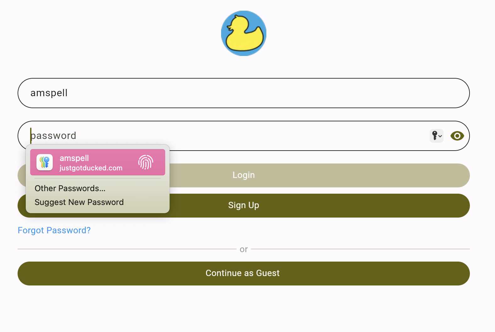
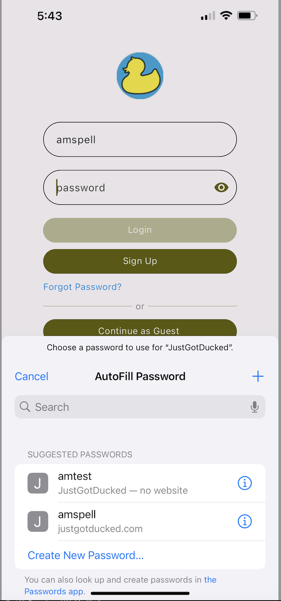

Cross-functional programming framework! Supports development across IOS, Android, and Web without the need to program in different languages.
Essentially, Flutter acts as a translator. You write your code in Dart, and Flutter translates Dart into whichever language a platform needs at any given time.
While working with IT Innovation at AAA as an intern, I had the opportunity to program and debug in a large Flutter codebase!
I added an autofill service to the login and registration pages, debugged scanning text-recognition functionalities, and developed the frontend for the landing/login page.
The app is called JustGotDucked! It is available on the app store and upgrades I assisted in coding are available in the app currently!
Below I will dive deep into what I learned in this process!

You know that moment when you go to login to an app that you love, and it knows who you are? Without a thought the app logs you in! Such functionality is supported by enabling AutoFill services in the application's backend!
This semester working with AAA, they challenged me to work on getting the Autofill service working for the JustGotDucked app to improve the user login experience.

Getting this Autofill service working was really quite simple. We just had to wrap our forms with an Autofill group, and then for each textfield we wanted to be autofilled, we set autofill to be true! It was as simple as that!
A major learning point in working with this service is that Apple products are very strongly interlinked, thus making it quite challenging for our application that is cross-functional to use the Apple passkey saver. However, after enabling permissions, the service was smooth sailing!
A larger, and more pain staking, code challenge from my semester with AAA was working on a text-recognition/scanning service. Another intern had written the main functionality for the code out and got it working on Android, however, it was being stubborn on IOS. That's where I came in to help debug and get it working!
For our scanning/text-recognition service we were using the Google MLKit Text Recognition. When debugging the problem, we made a few observations:
First, using third party services like this one can sometimes cut particular audiences out of an application. For example, to use the most updated version of the text recognition service, we needed to upgrade our app's minimum IOS support from 12 to 15. While this may seem drastic, most of our users were using IOS versions well over 15 by the time we created this service so it was no problem.
Second, IOS and Android do not get along all the time in Flutter. We were using code from Flutter's documentation that was supposed to support both IOS and Android text recognition, but we ended up needing to change the formula used by Flutter's documentation for parsing the images. Then we inserted a check for the platform type (IOS or Android) and calculated the formula accordingly.
Overall, working on this service and learning how to upgrade functionalities in a codebase while maintaining the functionality of other features was a great lesson!